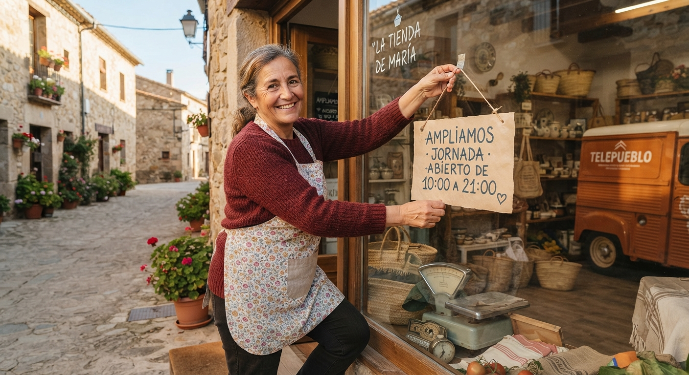
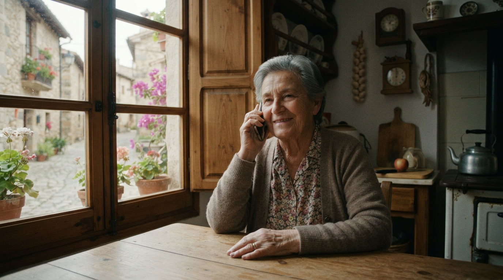

Su pueblo tiene mucho que ofrecer. Que la distancia no sea un inconveniente.
Telepueblo es un servicio de reparto a domicilio que gestiona su Ayuntamiento. Los vecinos piden a las tiendas del pueblo y una persona del propio pueblo se lo lleva a casa. Nosotros lo montamos, lo ponemos en marcha y lo mantenemos.
Lo que está pasando en los pueblos
Cada tienda que cierra es un motivo más para marcharse
Cuando cierra la última tienda, el que no conduce se queda vendido: toca pedir el favor a un hijo, a un vecino, o esperar al día que alguien baje al pueblo grande. Y cada cosa que desaparece es una razón más para hacer las maletas.

La idea
El comercio de siempre, ahora también en la puerta de casa
Telepueblo une a los vecinos con las tiendas del propio pueblo (y, cuando es posible, con la farmacia), y el reparto lo hace una persona del municipio que pone el Ayuntamiento. El Ayuntamiento decide y reparte; de la tecnología, de las tiendas y del día a día del servicio nos encargamos nosotros.
Para qué sirve, en concreto
Qué cambia en el pueblo
Da una razón para quedarse
Se puede vivir en el pueblo sin coche y sin depender de nadie para lo de cada día.
Llega al que vive lejos del centro
También a las pedanías y a las casas de las afueras, las primeras que se quedan aisladas.
La tienda del pueblo vende más
Las tiendas de siempre pueden llegar a todo el pueblo sin montar nada por su cuenta.
Algo que el vecino nota en casa
No es un folleto: es un servicio que se usa. Y del que otros pueblos acaban preguntando.
Sin tener que saber de ordenadores
Lo instalamos y lo mantenemos nosotros. El Ayuntamiento decide; de lo técnico nos ocupamos nosotros.
Números para la memoria y para pedir ayudas
Cada mes sabe cuántos pedidos ha habido y de dónde. Listo para justificar subvenciones.

Cómo funciona
Para el vecino, así de simple
Pide
Llama por teléfono, manda un WhatsApp o entra en la app y dice lo que necesita.
El comercio lo prepara
La tienda del pueblo lo deja listo, como cuando va en persona.
Se lo llevan a casa
Alguien del propio pueblo se lo acerca a la puerta. Casi siempre, alguien a quien ya conoce.
El Ayuntamiento pone a la persona que reparte. De organizar los pedidos y de la parte de ordenadores nos encargamos nosotros.
Qué incluye
Qué le dejamos montado
- La app, el teléfono y una pantalla sencilla para las tiendas y para el Ayuntamiento.
- Damos de alta a las tiendas del pueblo y las ayudamos hasta que cogen el truco.
- Enseñamos a usarlo a tiendas, repartidores y al personal del Ayuntamiento.
- Estamos detrás para lo que haga falta mientras el servicio funcione.
- Cada mes, un resumen de cómo va: pedidos, zonas y si va a más.
Lo decide el Ayuntamiento: lo que paga el vecino por cada envío, las zonas, los horarios y quién reparte. El servicio y los datos de los vecinos son suyos.
Para su Ayuntamiento
Lo que todo Ayuntamiento quiere tener claro
¿Quién lo paga?
El vecino paga por cada envío lo que decida el Ayuntamiento, siempre una cantidad económica: es un servicio para los vecinos, no un negocio. Lo que cuesta montar y mantener Telepueblo lo ajustamos a lo que puede el pueblo, y le ayudamos a buscar ayudas contra la despoblación o de la diputación.
¿Cómo se contrata?
Le dejamos los papeles preparados para poder contratarlo sin líos. No hay que redactar nada desde cero, y le echamos una mano con todo el trámite.
¿Y los datos? ¿Y si lo dejamos?
El servicio y los datos de los vecinos son del Ayuntamiento. El compromiso es solo el primer año. Después, sin ataduras: si un día deciden dejarlo, les damos los datos sin candados para que puedan seguir.
Cómo lo ponemos en marcha
De la primera reunión al primer reparto, en pocas semanas
Demo y propuesta
Le enseñamos cómo funciona y le pasamos una propuesta pensada para su pueblo. Sin compromiso.
Preparamos el servicio
Decidimos juntos las zonas, los horarios, los precios y quién reparte, sin olvidar las pedanías.
Altas y formación
Damos de alta a las tiendas y enseñamos a todo el mundo. Lo técnico no lo toca usted.
En marcha
Arranca el servicio. Cada mes recibe el resumen y nos tiene detrás para lo que surja.
Preguntas
Lo que suelen preguntarnos
¿Cuánto cuesta?
¿Cuánto se tarda en ponerlo en marcha?
¿Quién reparte y quién responde si pasa algo?
¿Hace falta alguien de informática?
¿Y las tiendas del pueblo?
¿Vale para un pueblo con pocos vecinos o muy repartido?
¿Incluye la farmacia?
Hablemos
Hablemos de su pueblo
Cuéntenos cómo es su pueblo —cuánta gente, cuántas pedanías, qué tiendas quedan— y le enseñamos Telepueblo con una propuesta hecha para usted. Le contesta una persona, no una máquina, en un par de días.
Trato directo con quienes lo montamos y una propuesta a medida para su pueblo, sin compromiso.